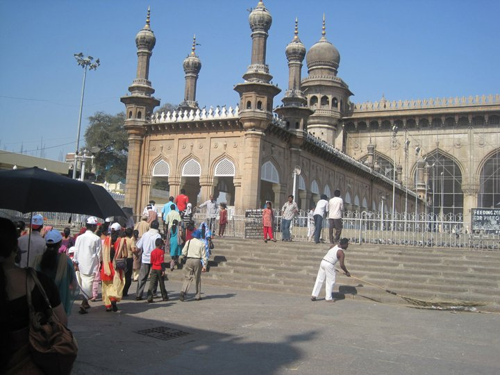

Alluring Heritage
The iconic facades of Hyderabad from the by-gone era weave their story through architectural design that is deeply influenced by the rulers during the period and the purpose of its existence. These ancient monuments are a great architectural marvel that have amazed the visitors for centuries.
If you are planning to visit Hyderabad for a day or two, here are some of the iconic heritage structures that you must visit during your stay in Hyderabad:
1. Charminar
Charminar is an Urdu word that translates into four minarets (‘Char’ means four and ‘minar’ means minarets). This iconic structure built in the Indo-Saracenic style serves both as a monument as well as a mosque since the past 400 years. Charminar was constructed in 1591 AD by Quli Qutub Shah, the fifth ruler of Hyderabad.
Charminar is considered to be one of the finest examples of the Indo-Saracenic style of architecture in India. It was built by Quli Qutub Shah after shifting the capital from Golconda to Hyderabad and it had served as a central point for the construction of the city of Hyderabad around it. It is also known as Arc de Triomphe of the East due to its resemblance to the architectural structure.
The square structure of Charminar consists of four arches, one on each side and four minarets, one each corner of the structure. Granite, limestone, mortar and pulverized marble were used in the construction of Charminar. Each of the 48.7 meter high minarets points towards the four cardinal directions. The intricate motifs, balconies and lotus-leaf base motifs are some of the architectural features of the Qutub Shahi dynasty visible on most of their structures. The four clocks were added on each side of the building in 1889.
According to legend, Charminar was built by Quli Qutub Shah to commemorate the eradication of a deadly plague, cholera. It was after the completion of Charminar, that the city of Hyderabad came into existence.
- Location: Charminar Road, Char Kaman, Ghansi Bazaar, Hyderabad, Telangana 500002
- Timings: 9:30 AM to 5:30 PM
- Entry fee: ₹ 5 for Indians and ₹ 100 for Foreigners
- Nearby Attractions:
- Mecca Masjid
- Sudha Car Museum
- Public Gardens
- Chowmahalla Palace
- Nehru Zoological Park
- Best restaurants and cafes nearby: There are several restaurants, fast food corners and Irani cafes near Mecca Masjid.
- Hotel New Udupi Anand Bhavan
- Nimrah Cafe and Bakery
- Rumaan Restaurant
- Bismillah Hotel
- Calicut Chillys Restaurant
2. Golconda Fort
The majestic fort of Golconda is spread over an enormous area of 11 kilometres. The vast expanse of Golconda Fort has marvelled its visitors with its grand architecture. Golconda Fort has evolved to this present structure of a grand fortress after several ruling dynasties of Hyderabad made their contributions towards it. Golconda Fort has mosques, temples, bastions, lawns and royal apartments within its premises. The Light and Sound Show narrates the grand history of this unique fort. I would suggest that every traveller should at least experience the magic of storytelling at the Light and Sound Show to enhance their knowledge about Golconda.
The word ‘Golconda’ is derived from two Telugu words ‘Golla’ and ‘Konda’, which translate to ‘Shepherd’s Hills’. The foundation of the Golconda Fort was laid by the Kakatiya dynasty in the 12th century. Quli Qutub Shah had made another significant contribution to the existing structure of the Golconda Fort by adding eight gates and 87 bastions.
Another attractive architectural feature of Golconda Fort is the Bala Hisar which is the highest point within the premises of the fort. It is said that if anyone claps at the entrance of the fort, the echo of the clap can be heard at Bala Hisar. This acoustical modification at the entrance of the Golconda Fort was used to alarm the royal family, who are almost a kilometre away from the entrance, of any potential intruders.
- Location: Khair Complex, Ibrahim Bagh, Hyderabad, Telangana 500008
- Timings: 9:30 AM to 5:30 PM
- Entry fee: ₹ 15 for Indians and ₹ 200 for Foreigners
- Nearby Attractions:
- Qutb Shahi Tomb
- Tomb of Abdullah Qutb Shah (VII King)
- Hyderabad Golf Club
- Best restaurants and cafes nearby: There are several restaurants, fast food corners and Irani cafes near Golconda Fort:
- Zaiqa Pride
- Hotel Rumaan
- Abu Faisal Restaurant
- Shah Ghouse Cafe & Restaurant
- Bait al Mandi
3. Mecca Masjid
This splendid mosque located at the south-west of Charminar was built in the seventeenth century. Mecca Masjid is one of the oldest and largest mosques in India. Sultan Mohammed Quli Qutub Shah in the year 1614 had laid the foundation of this mosque and the construction was completed during the reign of Aurangzeb in 1694, almost seven decades later. Several Nizams of Hyderabad have been laid to rest in the marble graves in an enclosure of the courtyard of Mecca Masjid.
It is believed that Mohammed Quli Qutub Shah had authorised the use of bricks for construction of the mosque to be prepared from the soil of the Holy Land of Mecca. These bricks were used in the construction of the central arch of the mosque. Therefore, it is called the Mecca Masjid.
The roof of the Mecca Masjid is rested on 15 arches, five on the three sides as the western side has a high wall for Mehrab. The two enormous octagonal columns of Mecca Masjid are carved from a single piece of granite. There are inscriptions of the verses from the Holy Quran on the doors and arches of the Mecca Masjid.
- Location: Charminar Road, Charminar, Ghansi Bazaar, Hyderabad, Telangana 500002
- Timings: 4 AM to 9:30 PM
- Entry fee: No entry fee.
- Nearby Attractions:
- Charminar
- Public Gardens
- Laad Bazaar
- Chowmahalla Palace
- Salar Jung Museum
- Best restaurants and cafes nearby: There are several restaurants, fast food corners and Irani cafes near macca masjid
- Nimrah Cafe and Bakery
- Rumaan Restaurant
- Bismillah Hotel
- Calicut Chillys Restaurant
- De Cafe Studio
4. Salar Jung Museum

Salar Jung Museum is the third largest museum in India, and spreads over an area of 10 acres. It is renowned for having the largest collection of artefacts by a single person in the world. This two-storeyed museum has 38 galleries to showcase the rich collection of Salar Jung III. Nawab Mir Yousuf Ali Khan, popularly known as Salar Jung III, was the former Prime Minister of the seventh Nizam of Hyderabad, Nawab Mir Osman Ali Khan. Salar Jung III dedicated most of his income in collecting these antiques, paintings and armours for a period of almost 35 years.
The enormous collection of Salar Jung Museum consists of approximately 43000 art objects, 9000 manuscripts and 47000 printed books belonging to different parts of the world such as the Middle East, South-East Asia, England, Ireland, France, Belgium, Italy and Germany. These rare antiques of the museum belong to the period between 2nd century B.C and early 20th century A.D.
Salar Jung Museum was a private museum of the Salar Jung family until it was opened to the public on 16th December 1951. The inauguration of the museum was done by the then Prime Minister of India, Jawaharlal Nehru. The Museum regularly organizes special exhibitions, seminars and workshops in collaboration with International Museums and other such organizations. The museum also publishes guide-Books, brochures and Research Journals on selected subjects in English, Hindi and Urdu languages to inform the masses about the rich heritage of the museum.
- Location: Salar Jung Road, near Minar Function Hall, Darulshifa, Hyderabad, Telangana 500002
- Timings: 10 AM to 5 PM. Closed on Friday.
- Entry fee:
- ₹ 20 for Indians and ₹ 500 for Foreigners
- Free for students with ID Card (below 18 years)
- 50% concession for Defense personnel in uniform and organised Kian parties
- Nearby Attractions:
- macca masjid
- Charminar
- Hussain Sagar Lake
- Chowmahalla Palace
- Nehru Zoological Park
- Best restaurants and cafes nearby: There are several restaurants near Salar Jung that serve Hyderabadi food and vegetarian food:
- Hotel Shadab
- Hotel Nayaab
- Nafees Restaurant
- Sree Raghavendra Darshini Pure Veg
- New Grand Hotel and Restaurant
5. Chowmahalla Palace

The Chowmahalla Palace is one of the most alluring palaces in Hyderabad, built over 200 years ago. The construction of this splendid palace was started by Nizam Salabat Jung in 1750 and completed between 1850 and 1869 during the reign of Afzal Jah V, the fifth Nizam of Hyderabad. The Chowmahalla Palace is said to have been inspired by Shah’s Palace located in Tehran, Iran.
The Chowmahalla Palace houses numerous Palaces, two courtyards, a Clock Tower, a Darbar Hall and a Roshan Bungalow within its premises that spreads over 45 acres of land. The lush green lawn of the palace creates a charming contrast with the white and yellow palaces. The intricate artwork on the walls and ceilings of the palace amaze its onlookers with the artistic skills of the by-gone era to date. The glass chandeliers inside the palaces and the large water fountain at the entrance of the palace indicate the lavish life of the Nizams. The elaborate display of the timeless items of the by-gone era at the Chowmahalla Palace consists of weapons, handwritten Quran, crockery, coins, home decor items and vintage cars, which enthral every visitor.
- Location: 0-4-236, Motigalli, Khilwat, Hyderabad, Telangana 500002
- Timings: 10 AM to 5 PM. Closed on Friday.
- Entry fee: ₹ 50 for Indian (Adult), ₹ 10 for Indian (Child) and ₹ 200 for Foreigners
- Nearby Attractions:
- Tahniyat Mahal
- Aftab Mahal
- Sudha Car Museum
- Nehru Zoological Park
- Khursheed Jah Devi
- Best restaurants and cafes nearby: There are several cafes, bakeries and restaurants near Chowmahalla Palace. The restaurants serves Hyderabadi dishes as well as South-Indian dishes, while the cafes are popular for their ‘chai’:
- Rumaan Restaurant
- Nimrah Cafe and Bakery
- Shah Tiffin Centre
- Bismillah Hotel
- Calicut Chillys Restaurant
6. Taj Falaknuma Palace

This opulent palace was built in 1894 by Nawab Vikar-ul-Umra of the Paigah family and later in 1897, the Nizam VI owned it. Falaknuma Palace was inspired by the European style of architecture and was designed by William Ward Marret, an English architect. The word Falaknuma in Urdu means mirror of the sky.
The majestic Falaknuma Palace is perched on a 2000 feet high hill that provides a panoramic view of Hyderabad. The whitewashed palace was built using Italian marble along with stained-glass windows. This lavish palace is adorned with Venetian chandeliers, wooden furniture, marble staircases, fountains, statues and paintings inspired from the places of travel by Nawab Vikar-ul-Umra.
With about 220 rooms and 22 halls, this magnificent palace has hosted several notable guests throughout the years, namely Aga Khan IV, Ivanka Trump and Narendra Modi. Since 2010, Falaknuma Palace has opened its doors as a luxury hotel by Taj Group of hotels in the name of Taj Falaknuma Palace.
Telangana Tourism offers a tour of this palace during the weekends for the general public.
- Location: Engine Bowli, Fatima Nagar, Falaknuma, Hyderabad, Telangana 500053
- Timings: 4:30 PM to 5:30 PM only on weekends through Telangana Tourism For staying at their luxury hotel Check-in from 2:00 PM Check-out till 12:00 PM
- Cost per night for two person: Starting from ₹ 35,000
- Nearby Attractions:
- macca masjid
- Charminar
- Sudha Car Museum
- Nehru Zoological Park
- Chowmahalla Palace
- Best restaurants and cafes nearby: The fine-dining restaurants at Taj Falaknuma Palace are renowned for their calm ambience and delectable dishes. The restaurants near Taj Falaknuma Palace mostly serve Hyderabadi dishes while the cafes are popular for their ‘chai’.
- Adaa
- Celeste
- Zaitun Arabian Restaurant
- Grand Bavarchi Restaurant
- Zam Zam Hotel
7. Qutub Shahi Tombs
The Qutub Shahi Tombs consist of tombs and mosques built by various rulers of the Qutub Shahi dynasty. It is located at a distance of approximately one kilometre from Banjara Darwaza, the northern gate of Golconda Fort. The tombs beautifully blend the Persian and Indian style of architecture.
The smaller tombs are designed to have a single-storeyed gallery while the larger tombs have double storey galleries. The centre of each tomb consists of a sarcophagus inside which the king was laid to rest. Each of the seven tombs of the Qutub Shahi dynasty is decorated with intricately carved stonework. Other than the rulers, the mausoleums also contain the graves of other members of the royal family and non-royal members that served the rulers.
It is interesting to note how each of the tombs follow the same architectural style, yet the minute differences on the carvings on the tomb make them unique from one another. The architectural style of each of the tombs gives an understanding of the developments in the field of architecture during the reign of each ruler.
- Location: Qutub Shahi Tombs, Hyderabad, Telangana 500008
- Timings: 9:30 AM to 6:30 PM
- Entry fee: ₹10 for adults and ₹5 for children
- Nearby Attractions:
- Hyderabad Golf Club
- Golconda Fort
- Best restaurants and cafes nearby: There are several places near Qutub Shahi Tombs where you can satisfy your hunger. There are restaurants serving North-Indian dishes, South-Indian dishes and Biryani.
- Punjabi Family Dhaba
- Pachi Pulusu Authentic Telugu/li>
- Biryani Art
- City Pride Restaurant
8. Hussain Sagar Lake

This heart-shaped lake built on the River Musi is one of the largest manmade lakes in Asia. This iconic lake separates the twin cities of Hyderabad and Secunderabad. It was built by Ibrahim Quli Qutub Shah in the year 1563 on the tributary of the River Musi. The lake was named after Hussain Shah Wali, a Sufi saint and engineer during the reign of Ibrahim Quli Qutub Shah. The lake is spread over an area of 5.7 square kilometres and measures 32 feet deep. The main purpose of building the lake was to irrigate the fields and meet the demands of water supply for residents of the princely state of Hyderabad.
The gigantic 72 feet Buddha statue is situated on the Gibraltar Rock of the Hussain Sagar Lake. The Buddha statue is the world’s tallest monolith structure of Gautama Buddha. It is carved out of white granite, stands 16 meters tall and weighs about 350 tons.
There are various water activities like parasailing, kayaking, and jet skiing held regularly at Hussain Sagar Lake. There are boat and cruise services operating between Lumbini Park and Buddha Statue daily at regular intervals.
- Location: Hussain Sagar Lake, Hyderabad, Telangana
- Timings: 8 AM to 10 PM
- Entry fee: No Entry Fee
- Boat Ride fee: ₹ 55 per person
- Activities:One can enjoy boat rides on Mechanised Boat, Jet Ski Boat or
- Rajahamsa Boat.
- Boating
- Parasailing
- Nearby Attractions:
- Love Sculpture Hyderabad
- Hussain Sagar View Point
- Buddha Statue
- Lumbini Park
- Jalavihar Water Park
- Best restaurants and cafes nearby: There are several fine-dining restaurants near Hussain Sagar Lake that provide a beautiful view of the lake. Most of these restaurants serve Indian cuisines while few of them specialise in Mughlai cuisine.
- Amogham Lake View Restaurant and Banquets
- Verandah Restaurant
- The Water Front
- Tansen
- Paradise Biryani
9. St. George’s Church
This is the oldest church in Hyderabad, built in 1844. One is transported to the colonial era as you step inside the beautiful St. George’s Church. This heritage Anglican church is one of the most beautiful architectures of Hyderabad, and attracts both the faithful and tourists from across the globe.
As the Christian population of the city increased over the years, many new churches were built in various parts of the city, but the old world charm of St. George’s Church remains unmatched till date in Hyderabad.
- Location: 4-1-1111, King Koti Road, Bogulkunta, Basheer Bagh, Hyderabad, Telangana 500001
- Entry fee: No entry fee.
- Nearby Attractions:
- Birla Mandir
- Lumbini Park
- B.M. Birla Science Museum
- Telangana State Archaeology
- Buddha Statue
- Best restaurants and cafes nearby: There are several restaurants located nearby that serve mainly Indian cuisine and vegetarian dishes.
- Palace Heights Bar and Restaurant
- Taj Mahal Hotel
- Chutneys Restaurant
- Prem Di Rasoi
- Yaariyan
10. Telangana State Archaeology Museum
This museum was established in 1930 as a result of the efforts of Mir Osman Ail Khan, the last Nizam of Hyderabad. The museum was constructed to preserve the rich heritage of Hyderabad belonging to the Nizam dynasty as well as the Kakatiya dynasty. It displays a wide collection of artefacts, armours, numismatics, stone sculptures, manuscripts and modern paintings belonging to the ancient time. Egyptian Mummy and Buddhists sculptures are some of the most attractive collections of Telangana State Archaeology Museum.
- Location: 5-10-193, I Floor, H A C A Bhavan, P G Road, near Control Room, Hyderabad, Telangana 500004
- Timings:10:30 AM to 5 PM
- Entry fee: ₹ 10 for adults and ₹ 5 for children.
- Nearby Attractions:
- Birla Mandir
- Lumbini Park
- B.M. Birla Science Museum
- Love Hyderabad Sculpture
- Buddha Statue
- Best restaurants and cafes nearby: There are several restaurants in the neighbouring areas that serve Chinese, Mughlai and Hyderabadi dishes
- Blue Diamond Chinese Restaurant
- New Niloufer Cafe and Restaurant
- Three Cheers restaurant
- Peshawar Restaurant
- Mohini Restaurant
Culture & Heritage
Food
Hyderabad are known for their unique cuisines. The city, which was once the capital for Marathis, Kannadigas, Muslims and Telugus as well, represents a unique blend of cuisines, beverages and eating habits. Dum Ka Biryani, Qubani Ka Meetha, Hyderabadi special biryani, Irani Chai, Sakinaalu, Sarva Pindi are among those specialities that others savor in Hyderabad. The hinterlands of Telangana offer a much more cuisine experience with the local flavors and spices going into the making of these dishes. The cuisine of Hyderabad is famous from a small tea stall to grand banquets in five star hotels. Hyderabadi Haleem is not just savored in the region but is also exported by some of the leading brands in the city. Made exclusively during the Ramzan season to break the fast held for more than 12 hours, people from all religions vie for this lip smacking non-vegetarian delight. These days, even vegetarian haleem is available widely. Haleem has also earned a GI ( Geographical Indicator) tag. The people of Telangana are known for mixing a variety of spices for making dishes out of jiggery, rice flour, wheat flour, maida, chillies, dal and other condiments. Brand Hyderabad towers proudly when it comes to the one-of-its-kind food items. Mughlai cuisine easily blends with Nawabi cuisine and inturn with the delicious Telangana pappu and other Andhra delicacies brought by the migrants. Truly, the capital city represents a coming together of various food habits.
Culture
Ganga Jamuna Tehzeeb, this is how one can describe a melting pot of cultures called Hyderabad. The predominantly Muslim dominated old city, the new city inhabited by Hindus, the Secunderabad and its cantonment populated by Christians, the Parsis of Boggulkunta,Telanganas, the Sikhs, Sindhis, Marwaris, Marathis, Andhras, Tamilians, Kannadigas- everyone makes Hyderabad, as it looks today. Teeming with cultural and religious diversity, the city was considered a cosmopolitan hub even during the time of Nizam’s. It is one place where one community blends into another with mutual respect and honor.
nalu, Bathukamma, Vinayaka Chavithi and other festivals are celebrated with fervor side-by-side where the common man enjoys the festivities without any religious discrimination. The entire city lights up not just during Diwali but also Christmas. In short, Hyderabad, located almost towards the Central part of India, on the Deccan plateau represents the culmination of Urdu dialect with Telugu. The language spoken in Hyderabad is different from rest of Telangana, which is infact again categorized into various dialects for every 100-150 km. Unity in diversity, Hyderabad is a testimony to this philosophy of brotherhood and peace between various religious and cultural groups. In short, Hyderabad is a beacon of multi-religious, multi ethnic, multi cultural and multi linguistic society at peace with itself. The food, dressing habits, life style and every other aspect varies in the city which has now acquired the tag of a global city in an increasingly globalized world, where it has seamlessly blended with new ideas and people with various nationalities!
Conclusion
If you travel through the lanes of Hyderabad and spend some time in the iconic heritage sites you will learn a lot about the city’s history and culture. The rich history of Hyderabad has always fascinated the guests to this city and has managed to carve a special place in the hearts of travellers, history lovers and architecture enthusiasts.
A visit to Hyderabad is incomplete without visiting the heritage sites in the city. If you have been to any of the above-mentioned heritage sites in Hyderabad then please share your experience in the comment section below. Also, if you have been to any other heritage sites in Hyderabad that are not mentioned in the list, then please mention them in the comment section.